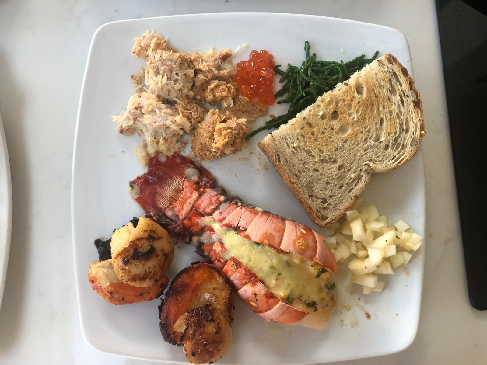

An extra special Christmas brunch

An extra special Christmas brunch for those that can be bothered with the faff
This is a definite must for those that enjoy Christmas as much as I do
All the ingredients should be bought before and kept in the fridge and prepared on the day. This serves 4 people. Enjoy with a glass of Champagne or orange juice.
Ingredients
- 2 fresh dressed crab
- 4 lobster tails
- 8 scallops
- 1 apple
- 4 slices good quality bread
- 300g samphire
- 100g fresh salmon roe
- 25g of butter
- 2 garlic cloves
Cooking Steps
- Preheat oven to 180 degrees celcius (fan assisted)
- Place the dressed crab on a plate, ensuring half a crab per plate. Place 1 tablespoon of salmon roe on each plate
- Dice the apple and place to one side on the plates
- Place the lobster tails in a oven dish with butter and garlic, roast for 15mins or until done. Remove from the oven and plate up.
- Lightly season the scallops with salt and pepper; add butter to a hot frying pan. Pan fry the scallops for 1 minute on each side and then plate up
- Lightly steam the samphire for 2-3mins until tender, add to each platev when done
- Toast 2 slices of good quality bread and add half a slice to each plate
- Add the scallops and lobster, samphire